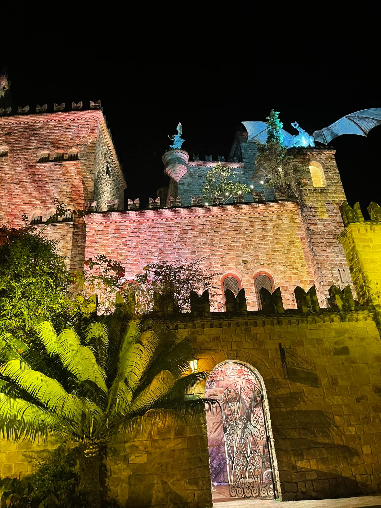
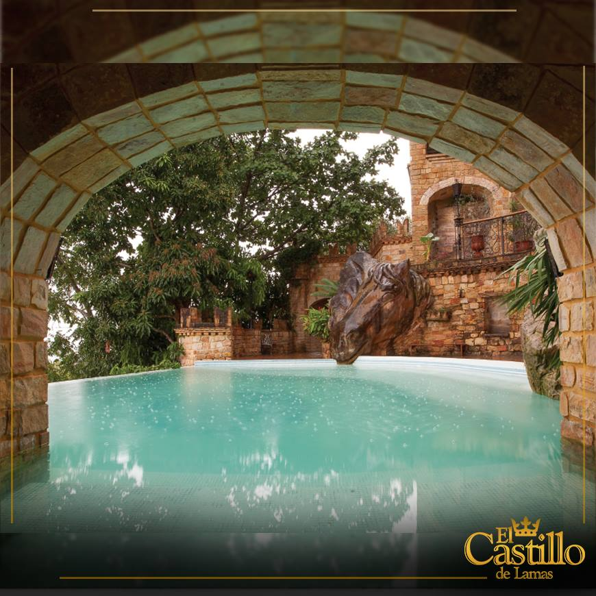
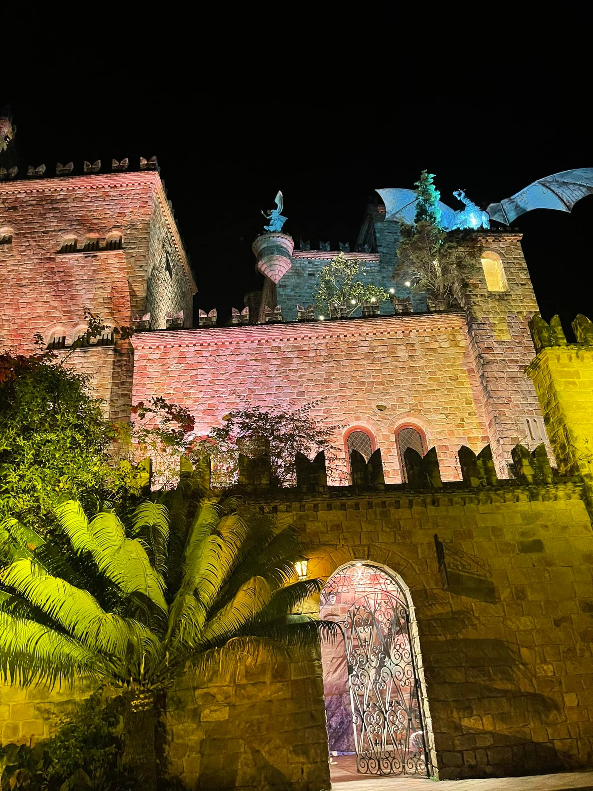
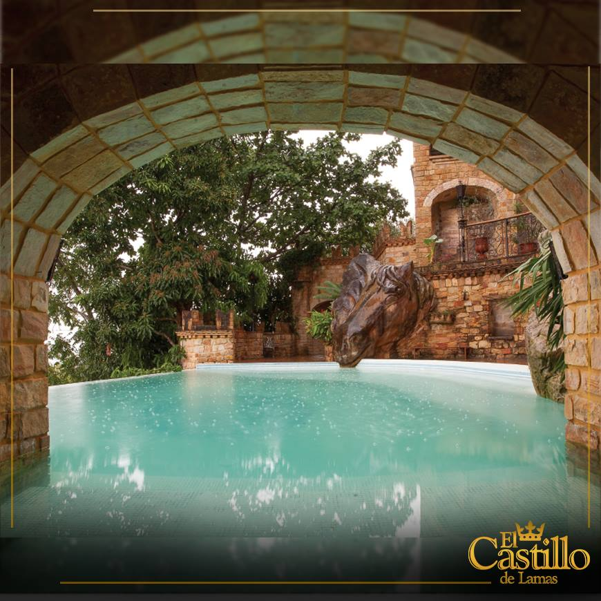
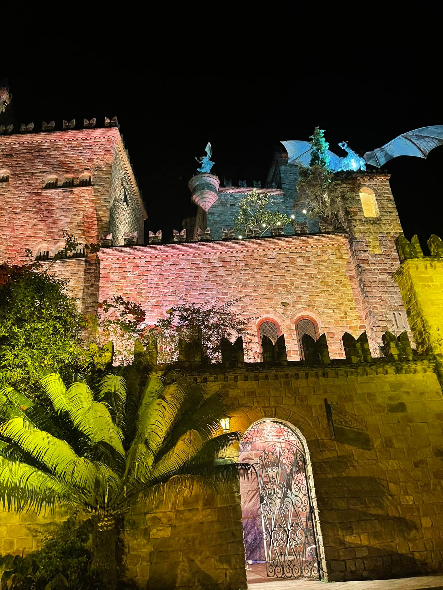
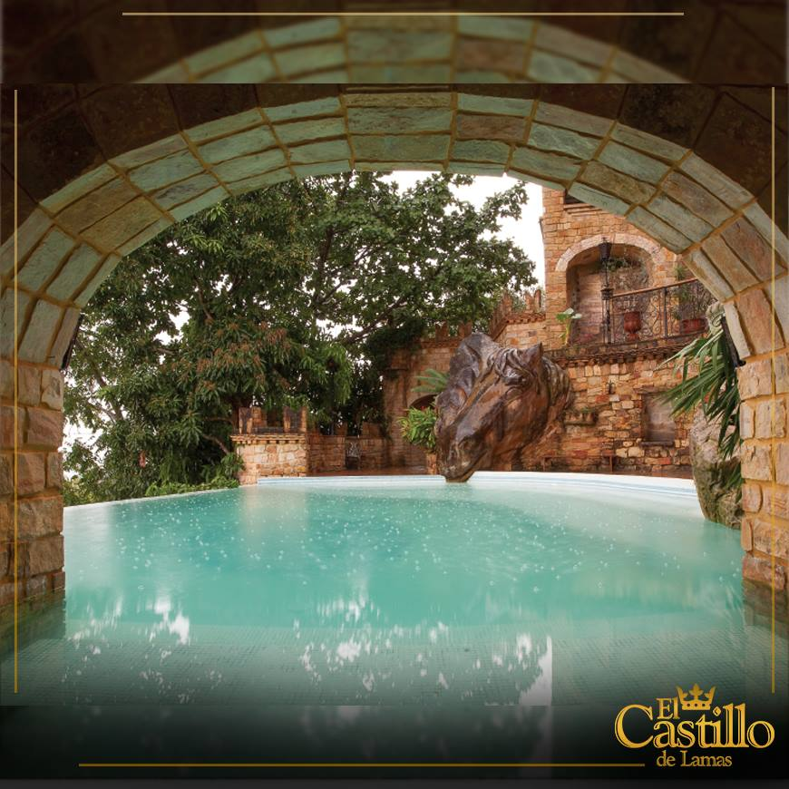
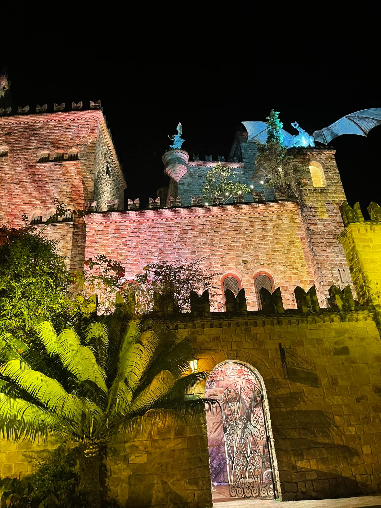
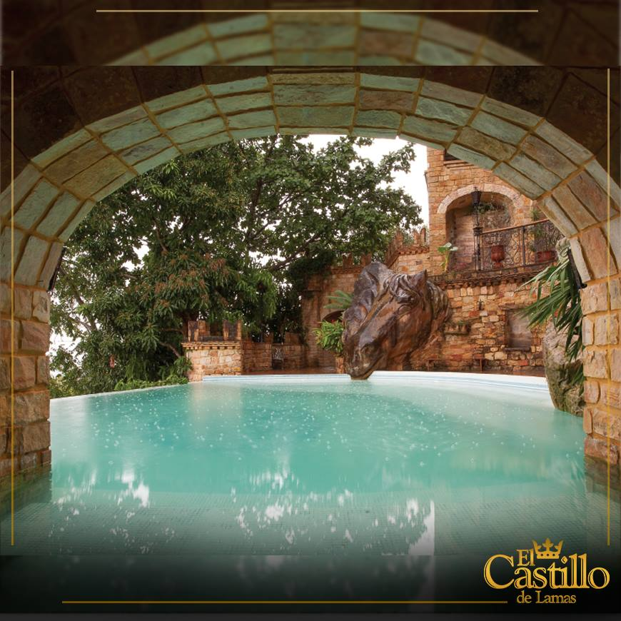

 



Lamas atun Wasipi
Lamas atun Wasipi, Amazonaspish chawpinpi suk atun wasi kan. Kay wasika ñawpa wasikunamanta sukninmi, Lamas llaktapi sayak. Kaypika, kamka tukuy shunkuykiwan kay pachata munanki. Kay wasika yachaywan Amazonapish yachayta tinkuchin. Kaypika, kamka rikunki: atun kawaykunata, Muralkunata, Chikuykunata, Ñawpa willakuykunata Kay wasika suk atun yachaypak kamka kaypika suk atun mushyayta rikunki. kamka kaypika rikunki Irupa yachaywan >Amazonaspin yachayta tinkuchin, chaymi kay wasika suk atun yachaypak.
Interactue para que suene el audio